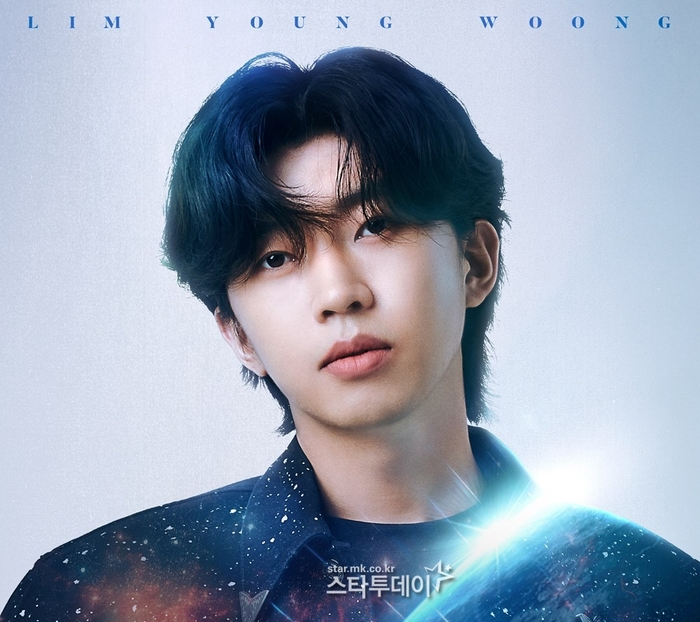

가수 임영웅이 전국투어 콘서트로 연일 화제를 낳고 있다. 14일 시작되는 서울 콘서트 예매를 앞두고 사상 최초로 전용 상담전화가 개설된 가운데, 이번에는 객석으로 감싸는 ‘360도형’ 무대가 눈길을 끈다.
피케팅(피 튀기는 티케팅)을 통해 콘서트장을 찾을 관객들을 위한 초특급 배려다. 관객 1명도 빠짐 없이 시야에 방해를 받지 않고 임영웅의 무대와 얼굴을 만끽할 수 있게 했다.
일반적인 콘서트 무대는 일자형으로 정면 방향으로만 관람이 가능하다. 반면 임영웅 서울 콘서트 ‘360도형’ 무대는 원형극장 가운데를 내려다보는 듯한 관람이 가능해 시야에 방해를 덜 받는 전방위 관람이 가능하며 그만큼 몰입감도 커진다. 또, 가장 저렴한 S석 관객들도 임영웅의 무대 이동에 따라 다양한 모습을 볼 수 있게 됐다.